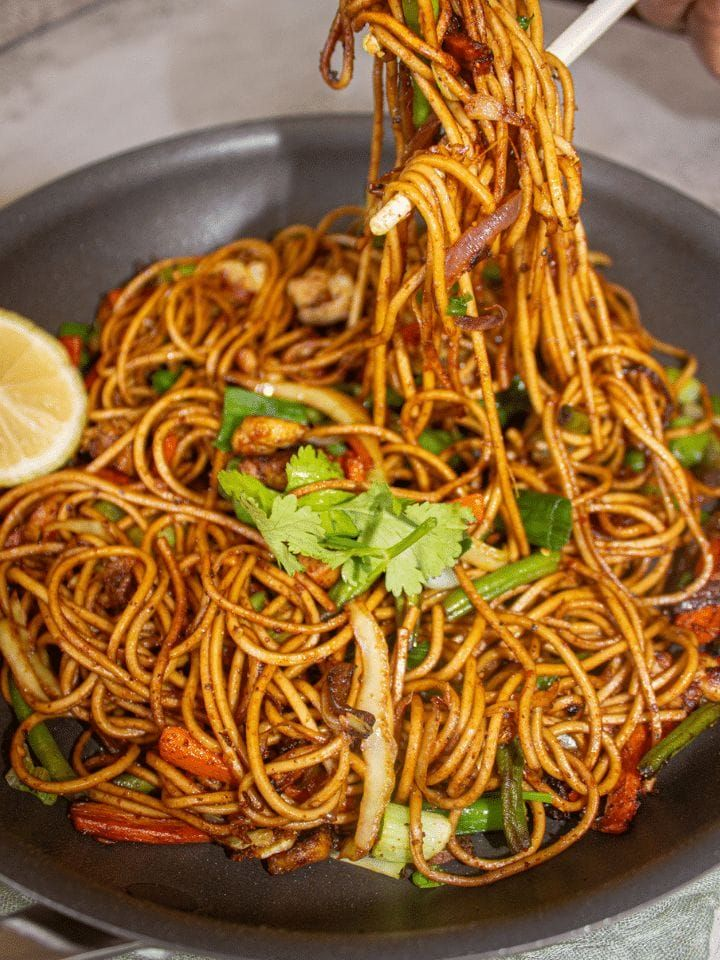
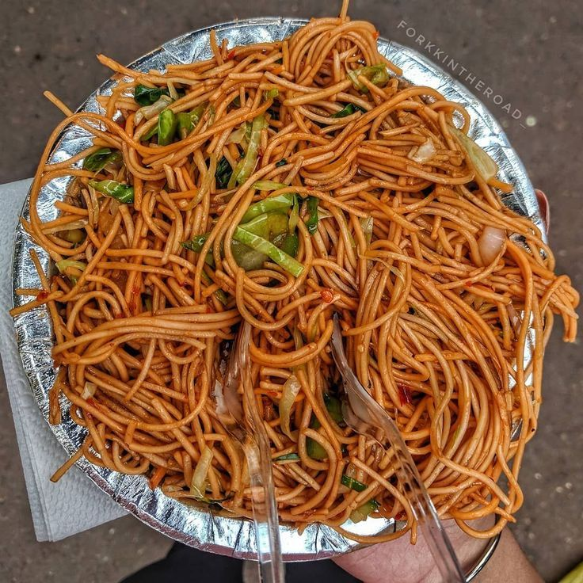
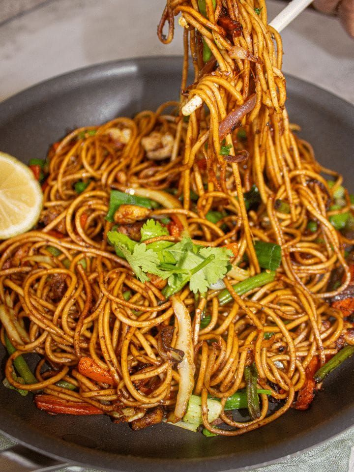
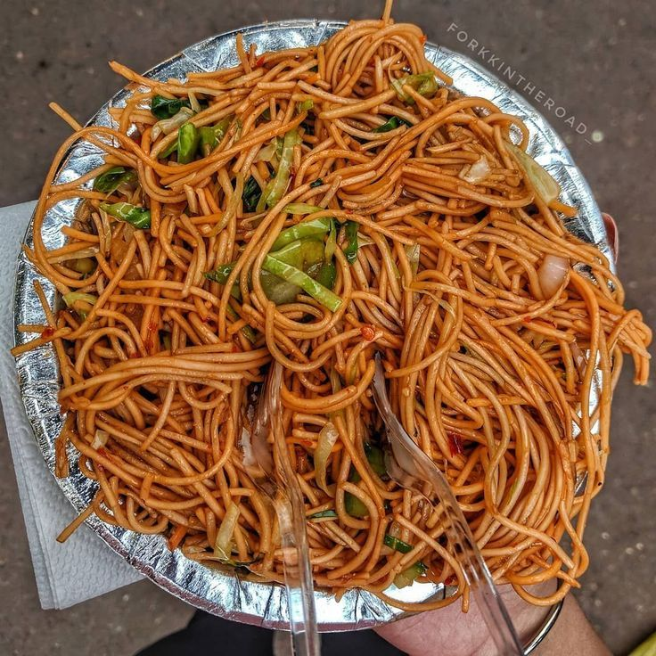

Momo ko Achar
Momo ko achar is a spicy and tangy Nepali dipping sauce made from tomatoes, chili, garlic, and herbs. It perfectly complements the soft and juicy momos, adding a burst of flavor with every bite.
Explore Recipe 



Chowmein is one of the most beloved and widely consumed street foods in Nepal, found everywhere from roadside stalls to fancy restaurants. Inspired by Chinese cuisine but adapted to local tastes, Nepali-style Chowmein stands out for its perfect balance of savory, spicy, and slightly tangy flavors. The dish typically features stir-fried noodles tossed with a colorful medley of vegetables like carrots, cabbage, and bell peppers, all cooked on high flame to retain a crunchy texture and smoky aroma.
 Prep Time
Prep Time15 mins
 Cook Time
Cook Time15 - 20 mins
 Ingredients:
Ingredients:  Instructions:
Instructions:  Pro Tips
Pro Tips
Momo ko achar is a spicy and tangy Nepali dipping sauce made from tomatoes, chili, garlic, and herbs. It perfectly complements the soft and juicy momos, adding a burst of flavor with every bite.
Explore Recipe
Tama is a traditional Nepali dish made from fermented bamboo shoots, often cooked with black-eyed peas and potatoes. Known for its unique sour flavor.
Explore Recipe
Chicken Curry is a flavorful dish widely enjoyed in Nepali households. Made by simmering chicken pieces in a rich, spiced gravy, it combines aromatic herbs and spices for a bold and satisfying taste.
Explore Recipe